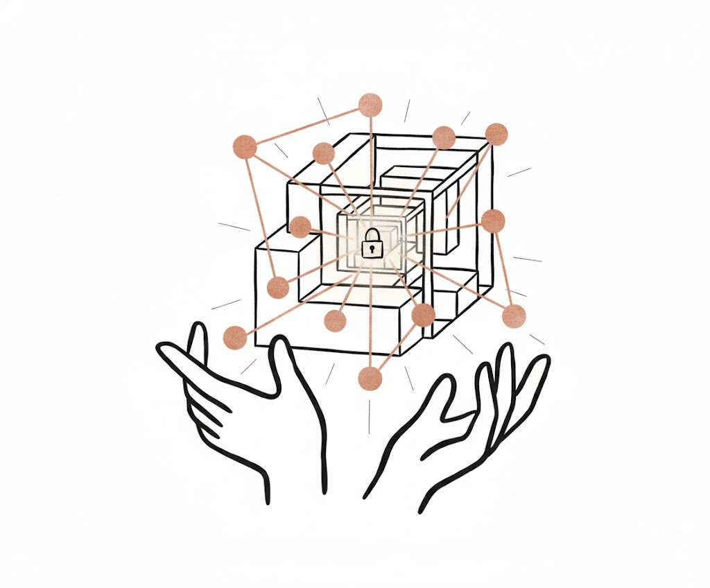

Building AI that thinks
deeply and acts responsibly.
Protoethik is building the next generation of AI systems that think deeply, reason transparently, and empower humanity.
Experience TyloAI
Meet our latest flagship model and the entire ode-7 family on our official chat platform.
ode-code CLI
ode-code CLI is a terminal-based AI assistant that understands your codebase and automates tasks.